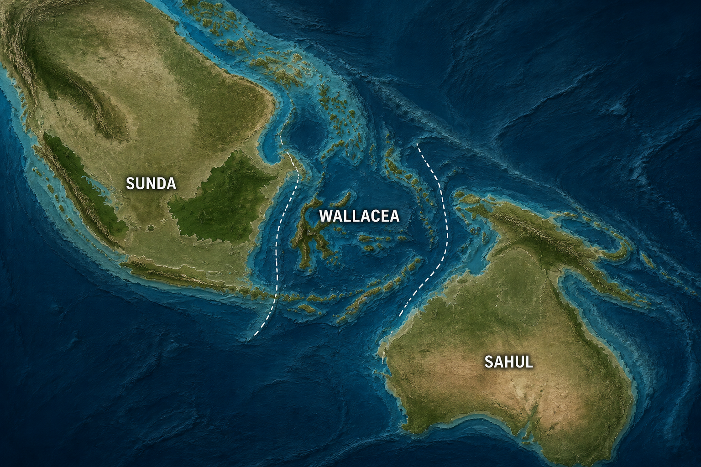

Ruang Baca
pilih buku di rak untuk mulai membaca
I. Tingkat Keanekaragaman Hayati
Pengertian Keanekaragaman Hayati
Keanekaragaman hayati (biodiversitas) adalah keseluruhan variasi yang ditemukan pada makhluk hidup di suatu wilayah, baik yang tampak dari luar (fenotipe) maupun yang tersimpan dalam susunan genetiknya (genotipe). Keragaman ini terjadi pada tiga tingkatan utama: gen, spesies, dan ekosistem.
Keanekaragaman Gen
Keanekaragaman gen adalah variasi susunan gen yang terjadi antarindividu dalam satu spesies yang sama, sehingga menghasilkan perbedaan sifat meskipun individu-individu tersebut masih tergolong dalam satu jenis.
Variasi gen dapat muncul secara alami melalui rekombinasi gen saat reproduksi seksual maupun mutasi. Selain itu, manusia juga berperan menciptakan variasi baru melalui hibridisasi (persilangan antarvarietas atau antarspesies kerabat dekat) dan domestikasi (proses menjinakkan serta membudidayakan makhluk liar dalam lingkungan yang terkontrol), yang keduanya banyak dimanfaatkan dalam pertanian dan peternakan.
Contoh:
- Varietas padi: IR64, Ciherang, Rojolele
- Varietas mangga: mangga harum manis, mangga gadung, mangga golek
- Variasi warna dan bentuk tubuh pada kucing atau anjing peliharaan

Keanekaragaman Spesies
Keanekaragaman spesies adalah variasi yang ditemukan antarspesies yang berbeda, baik dalam satu genus maupun famili yang sama. Perbedaan ini mencakup bentuk tubuh, ukuran, warna, jumlah, hingga pola tingkah laku.
Contoh: famili kucing (Felidae) yang beragam mulai dari kucing rumah, harimau, hingga singa; atau famili kacang-kacangan (Fabaceae) yang mencakup kacang tanah, kacang hijau, dan kacang kedelai.

Keanekaragaman Ekosistem
Keanekaragaman ekosistem terbentuk dari interaksi antara komponen biotik (makhluk hidup) dan abiotik (faktor fisik seperti suhu, cahaya, kelembapan, dan jenis tanah) yang berbeda-beda di tiap wilayah. Perbedaan kombinasi ini menghasilkan berbagai bentuk ekosistem dengan komunitas makhluk hidup yang khas satu sama lain — akan kita jelajahi lebih jauh pada Buku II.

II. Tipe Ekosistem
Pengertian Ekosistem
Ekosistem adalah suatu sistem yang terbentuk dari hubungan timbal balik antara komponen biotik dan abiotik pada suatu lingkungan tertentu, yang saling memengaruhi dan membentuk satu kesatuan fungsional.
Ekosistem Perairan (Akuatik)
Ekosistem akuatik adalah ekosistem yang didominasi oleh lingkungan air, baik air tawar maupun air laut. Faktor pembatas utamanya meliputi intensitas cahaya yang menembus air, kadar oksigen terlarut, arus, serta salinitas (kadar garam).
Berdasarkan cara hidup dan posisinya di dalam air, organisme akuatik dapat dikelompokkan menjadi:
- Plankton — organisme berukuran umumnya mikroskopis yang melayang mengikuti arus air, terdiri dari fitoplankton (plankton tumbuhan) dan zooplankton (plankton hewan).
- Nekton — organisme yang mampu berenang aktif melawan arus, misalnya ikan, cumi-cumi, dan paus.
- Neuston — organisme yang hidup atau mengapung tepat di permukaan air, misalnya serangga air.
- Bentos — organisme yang hidup di dasar perairan, baik dengan menempel maupun merayap, misalnya kerang dan bintang laut.
- Perifiton — organisme yang menempel pada benda atau tumbuhan di dalam air, misalnya alga yang melekat pada batu atau batang tumbuhan air.

Perairan Tawar
Danau, sungai, dan rawa dengan salinitas rendah.

Perairan Laut
Laut, terumbu karang, dan estuari dengan salinitas tinggi.
Ekosistem Darat
Ekosistem darat (bioma) adalah ekosistem besar berbasis daratan yang tersebar berdasarkan letak lintang dan iklim, sehingga membentuk komunitas tumbuhan dan hewan khas di tiap wilayahnya.

Hutan Hujan Tropis
Curah hujan tinggi sepanjang tahun, vegetasi lebat berlapis, keanekaragaman tertinggi di antara bioma lain.

Sabana
Padang rumput luas dengan pohon/semak tersebar jarang, musim kemarau panjang.

Padang Rumput
Didominasi rerumputan, curah hujan lebih rendah dari sabana, hampir tanpa pohon.

Gurun
Curah hujan sangat rendah, vegetasi jarang dan teradaptasi khusus, suhu ekstrem.
.jpg)
Hutan Gugur
Empat musim, pohon menggugurkan daun saat musim dingin/gugur.

Taiga
Hutan konifer, musim dingin panjang, didominasi pohon berdaun jarum.
.jpg)
Tundra
Wilayah terdingin, tanah membeku (permafrost), vegetasi rendah seperti lumut.
III. Keanekaragaman Flora
Persebaran Flora di Indonesia
Indonesia memiliki keanekaragaman flora yang sangat melimpah, dipengaruhi oleh kondisi biogeografi serta perbedaan ketinggian tempat (topografi). Berdasarkan wilayah persebarannya, flora Indonesia terbagi menjadi flora Dataran Sunda, Dataran Sahul, dan Kawasan Wallacea.
Wilayah Biogeografi Flora
- Flora Dataran Sunda (Kawasan Barat) — didominasi oleh tumbuhan dari famili Dipterocarpaceae, seperti pohon keruing (Dipterocarpus applanatus) yang kayunya sering dimanfaatkan untuk bahan bangunan, serta famili Nepenthaceae seperti tumbuhan pemangsa serangga kantong semar (Nepenthes gymnamphora).
- Flora Dataran Sahul (Kawasan Timur) — meliputi tanaman sagu (Metroxylon sagu), tumbuhan dari famili Myristicaceae seperti pala (Myristica fragrans), serta leda (Eucalyptus deglupta) yang memiliki batang berwarna-warni.
- Flora Kawasan Wallacea (Kawasan Peralihan) — terletak di wilayah Indonesia bagian tengah dengan jenis vegetasi khas yang memadukan elemen Asiatis dan Australis.
Klasifikasi Iklim Vertikal Franz Wilhelm Junghuhn
Ahli geografi dan botani asal Jerman, Franz Wilhelm Junghuhn, mengklasifikasikan iklim di Pulau Jawa secara vertikal sesuai dengan jenis tumbuhan yang hidup pada ketinggian tersebut. Pengelompokan ini membagi flora Indonesia secara vertikal menjadi empat zona utama:

1. Zona Ketinggian 0–650 meter (Dataran Rendah & Hutan Mangrove) — wilayah pantai dan hutan mangrove ditumbuhi pandan, bakau (Rhizophora sp.), kayu api (Avicennia sp.), bogem (Bruguiera sp.), sagu, dan nipah. Semakin jauh ke daratan, ditemukan tanaman budidaya seperti kelapa, kelapa sawit, cokelat, padi, jagung, kapuk (Ceiba pentandra), dan karet (Hevea brasiliensis).

2. Zona Ketinggian 650–1.500 meter — ditumbuhi oleh tanaman rasamala (Altingia excelsa), kina (Cinchona officinalis), aren, pinang, kopi, tembakau, dan teh.
3. Zona Ketinggian 1.500–2.500 meter — ditumbuhi oleh tanaman cantigi koneng (Rhododendron album), cemara gunung (Casuarina junghuhniana), anggrek tanah (Paphiopedilum praestans) di pegunungan Papua, serta berri (Vaccinium lucidum).

4. Zona Ketinggian di atas 2.500 meter (Pegunungan Cold/Dingin) — merupakan kawasan pegunungan berudara dingin yang didominasi oleh lumut, liken, dan bunga edelweiss (Anaphalis javanica).
IV. Keanekaragaman Fauna di Indonesia
Mengapa Flora dan Fauna Berbeda-beda?
Setiap wilayah di bumi memiliki sejarah geologi dan kondisi lingkungan yang berbeda. Perbedaan ini memengaruhi tiga hal: jenis organisme yang dapat hidup di sana, kemampuan organisme untuk berpindah ke wilayah tersebut, dan proses adaptasi serta evolusi yang dijalani makhluk hidup di dalamnya.
Dengan kata lain, persebaran flora dan fauna adalah hasil dari sejarah geologi, kondisi lingkungan, dan evolusi yang saling berkaitan — bukan sesuatu yang terjadi secara acak.

Sundaland
Sundaland meliputi Sumatra, Jawa, Kalimantan, dan Bali. Wilayah ini dahulu terhubung langsung dengan Benua Asia melalui daratan. Pada zaman es, permukaan air laut turun drastis sehingga dasar laut yang dangkal di sekitar wilayah ini berubah menjadi daratan luas — membentuk semacam "jembatan darat" yang memungkinkan hewan-hewan dari Asia berpindah masuk.
Karena terhubung dengan Asia, fauna Sundaland memiliki banyak ciri Asiatis — mirip dengan fauna daratan Asia.

Orangutan
Primata besar, Kalimantan & Sumatra.

Harimau
Predator puncak hutan Sumatra.

Gajah
Mamalia darat terbesar di Sundaland.

Badak
Badak Sumatra, salah satu spesies paling langka.
Wallacea
Wallacea meliputi Sulawesi, Nusa Tenggara, dan Maluku — wilayah yang tidak pernah sepenuhnya terhubung dengan Asia maupun Australia, bahkan saat permukaan laut turun di zaman es. Laut yang dalam di sekelilingnya menjadi penghalang alami bagi kebanyakan hewan darat untuk menyeberang.
Hanya sebagian organisme yang berhasil mencapai wilayah ini — entah terbawa arus, terbang, atau secara kebetulan. Begitu terisolasi di pulau-pulau Wallacea, populasi tersebut berkembang sendiri secara terpisah dari populasi asalnya. Proses ini disebut spesiasi alopatrik — pembentukan spesies baru akibat populasi terpisah secara geografis dalam waktu yang lama, sehingga masing-masing berevolusi mengikuti jalur berbeda.
Di beberapa kasus, satu nenek moyang yang berhasil masuk dapat berkembang menjadi banyak spesies berbeda untuk mengisi relung-relung (niche) yang kosong — proses ini disebut radiasi adaptif. Kombinasi isolasi dan radiasi adaptif inilah yang membuat Wallacea kaya akan hewan endemik — hewan yang hanya ditemukan di satu wilayah tertentu dan tidak ada di tempat lain.

Anoa
Kerbau kerdil endemik Sulawesi.

Babirusa
Babi bertaring khas Sulawesi.
.jpg)
Komodo
Kadal terbesar di dunia, endemik Nusa Tenggara.
.JPG)
Maleo
Burung endemik yang mengerami telur di pasir panas.
Sahul
Sahul meliputi Papua dan Australia. Sama seperti Sundaland, Papua dan Australia dahulu dapat terhubung lewat daratan ketika permukaan laut turun pada zaman es. Hewan dapat berpindah bebas di antara kedua wilayah ini.
Karena kawasan Sahul memiliki sejarah evolusi yang berbeda dari Asia (terpisah oleh Wallacea di tengahnya), fauna yang berkembang di sini punya ciri khas tersendiri — banyak yang bercirikan Australis, seperti mamalia berkantung (marsupialia).

Kanguru Pohon
Marsupialia yang hidup & memanjat di pepohonan Papua.

Kasuari
Burung raksasa tak bisa terbang, khas Papua & Australia.
,_Natural_History_Museum,_London,_Mammals_Gallery.JPG)
Kuskus
Marsupialia arboreal, kerabat jauh koala.
Garis Wallace & Garis Weber
Batas antara ketiga wilayah ini bukan garis administratif, melainkan garis yang ditarik berdasarkan pengamatan biologis. Garis Wallace memisahkan Sundaland dari Wallacea — dicetuskan oleh Alfred Russel Wallace, naturalis yang menjelajahi Nusantara pada abad ke-19 (ilustrasinya bisa kamu lihat di halaman depan situs ini). Belakangan, Garis Weber ditarik lebih ke timur untuk menandai batas yang lebih akurat antara Wallacea dan Sahul, berdasarkan perbandingan jumlah spesies Asiatis dan Australis di tiap sisi.
Mengapa Akhirnya Berbeda?
Secara sederhana, rangkaian sebab-akibatnya seperti ini:
- Sejarah geologi menentukan hubungan antarwilayah (terhubung daratan atau terpisah laut dalam)
- Perpindahan organisme ditentukan oleh hubungan tersebut — organisme mana yang bisa mencapai wilayah itu
- Kondisi lingkungan menentukan organisme mana yang mampu bertahan hidup di sana
- Isolasi + adaptasi + evolusi pada akhirnya menghasilkan perbedaan organisme antarwilayah
Hasil akhirnya: Sundaland → Asiatis, Wallacea → peralihan & kaya endemik, Sahul → Australis.
Perbedaan flora dan fauna Indonesia terjadi karena setiap wilayah memiliki sejarah geologi dan kondisi lingkungan yang berbeda. Perbedaan tersebut memengaruhi perpindahan, kemampuan bertahan hidup, dan evolusi organisme sehingga terbentuk persebaran flora dan fauna yang berbeda.
V. Manfaat Keanekaragaman Hayati
Fungsi dan Manfaat Keanekaragaman Hayati
Keanekaragaman hayati Indonesia memiliki fungsi dan manfaat yang sangat luas dalam menopang kehidupan manusia, mulai dari pemenuhan kebutuhan dasar hingga aspek sosial-budaya dan kelestarian genetik.
A. Sumber Pangan
- Makanan Pokok — sebagian besar penduduk Indonesia mengonsumsi beras dari tanaman padi (Oryza sativa). Selain itu, daerah tertentu menggunakan jagung, singkong, ubi jalar, talas, dan sagu sebagai makanan pokok.
- Buah-buahan & Sayuran — Indonesia memiliki sekitar 400 jenis tanaman buah (seperti sirsak, duku, durian, manggis, rambutan, jeruk bali, markisa, mangga, matoa) serta sekitar 370 jenis sayuran (sawi, kangkung, katuk, kacang panjang, buncis, bayam, terung, kol, seledri, bawang kucai).
- Tanaman Umbi & Rempah — sekitar 70 jenis tanaman berumbi (kunyit, jahe, lengkuas, temu lawak, wortel, lobak, talas, singkong) dan 55 jenis tanaman rempah-rempah (merica, cengkih, pala, ketumbar).
- Sumber Pangan Hewani — berasal dari aneka ragam hewan darat, air tawar, dan laut seperti sapi, kambing, kelinci, burung, ayam, ikan bandeng, ikan lele, belut, kepiting, kerang, udang, dan rajungan.
B. Sumber Obat-obatan
Indonesia memiliki sekitar 30.000 spesies tumbuhan, di mana 940 spesies merupakan tanaman obat dan sekitar 250 spesies telah dimanfaatkan dalam industri obat herbal lokal. Beberapa contoh pemanfaatannya:
- Buah Merah (Pandanus conoideus) — dimanfaatkan sebagai obat pengobati kanker (tumor), kolesterol tinggi, dan tekanan darah tinggi.
- Mengkudu / Pace (Morinda citrifolia) — digunakan untuk menurunkan tekanan darah tinggi.
- Pohon Kina (Cinchona calisaya, Cinchona officinalis) — kulit kayunya mengandung alkaloid kina (quinine) yang efektif untuk obat malaria.
- Produk Hewani — madu dari lebah dimanfaatkan secara luas untuk meningkatkan daya tahan tubuh.
C. Sumber Kosmetik & Perawatan Diri
- Penghalus Kulit Tradisional — tumbuhan seperti kemuning, bengkuang, alpukat, dan beras digunakan sebagai bahan lulur tradisional.
- Perawatan Rambut — urang-aring (Eclipta alba), mangkokan, pandan, minyak kelapa, dan lidah buaya (Aloe vera) dimanfaatkan sebagai pelumas dan penghitam rambut.
- Bahan Parfum & Wewangian — bunga melati (Jasminum grandiflorum) dan kayu cendana (Santalum album) dimanfaatkan sebagai bahan wewangian alami.
D. Sumber Sandang & Papan
Bahan Sandang (Pakaian) — serat tumbuhan seperti rami, kapas, pisang hutan/abaca, sisal, kenaf, dan jute dipintal menjadi kain. Suku Dani di Lembah Baliem memanfaatkan labu air untuk koteka (horim), serta tumbuhan wen dan purun tikus untuk pakaian wanita. Produk hewani seperti ulat sutra dan kulit sapi/kambing digunakan untuk bahan pakaian dan jaket.
Bahan Papan (Bangunan) — kayu dari jati, kelapa, nangka, meranti, keruing, rasamala, ulin, dan bambu dimanfaatkan untuk jendela, pintu, tiang, dan alas atap. Daun lontar dan gebang di Pulau Timor dan Alor digunakan untuk atap dan dinding rumah.

Sandang — Batik
Serat kapas dan pewarna alami diolah menjadi kain, salah satunya lewat teknik batik.

Papan — Rumah Adat
Kayu dan bambu jadi bahan utama rumah adat, seperti tongkonan khas Toraja.
E. Aspek Budaya, Keagamaan, & Tradisi
Penduduk Indonesia yang terdiri dari sekitar 350 etnis (suku) memanfaatkan keanekaragaman hayati dalam berbagai upacara adat dan ritual keagamaan:
- Budaya Nyekar (Ziarah Kubur) — masyarakat Jawa menggunakan bunga mawar, kantil, dan melati.
- Upacara Ngaben di Bali — menggunakan 39 jenis tumbuhan yang mengandung minyak atsiri berbau harum (kenanga, melati, cempaka, pandan, sirih, cendana).
- Hari Raya Kurban (Umat Islam) — menggunakan hewan ternak seperti kambing, sapi, dan kerbau.
- Perayaan Natal (Umat Nasrani) — menggunakan pohon cemara.
F. Sumber Plasma Nutfah (Sumber Daya Genetik)
Plasma nutfah adalah bagian tubuh tumbuhan, hewan, atau mikroorganisme yang mempunyai fungsi dan kemampuan mewariskan sifat. Setiap organisme memiliki plasma nutfah yang berguna untuk merakit varietas unggul (seperti tahan penyakit atau berproduktivitas tinggi). Keanekaragaman plasma nutfah menjaga agar mutu sifat tetap lestari. Contohnya: padi Rojolele mewariskan sifat pulen dan rasa enak, serta ubi jalar cilembu dan duku palembang mewariskan sifat rasa manis.
Tabel Ringkasan Pemanfaatan Keanekaragaman Hayati
| Kategori Manfaat | Spesies / Bahan Organik | Kegunaan Utama |
|---|---|---|
| Pangan Pokok | Padi, Jagung, Singkong, Ubi Jalar, Talas, Sagu | Sumber karbohidrat dan makanan pokok penduduk |
| Obat Herbal | Buah Merah, Mengkudu, Pohon Kina, Lebah Madu | Pengobatan kanker, hipertensi, malaria, dan daya tahan tubuh |
| Kosmetik & Perawatan | Kemuning, Bengkuang, Urang-aring, Lidah Buaya, Melati | Lulur tradisional, pelumas & penghitam rambut, parfum |
| Sandang | Rami, Kapas, Abaca, Labu Air, Ulat Sutra | Bahan pembuat kain, pakaian adat (koteka), kain sutra |
| Papan (Konstruksi) | Kayu Jati, Meranti, Keruing, Ulin, Bambu, Daun Lontar | Bahan bangunan rumah tradisional, tiang, atap, dan dinding |
| Upacara & Tradisi | Mawar, Kantil, Melati, Cempaka, Cendana, Hewan Kurban | Ritual Nyekar, Ngaben di Bali, Hari Raya Kurban, dan Natal |
| Plasma Nutfah | Padi Rojolele, Ubi Cilembu, Duku Palembang | Sumber daya genetik untuk perakitan varietas unggul |